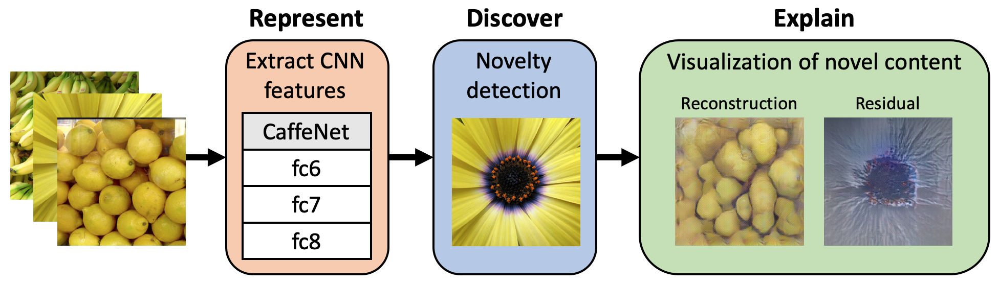

Visualizing Image Content to Explain Novel Image Discovery
| Jake Lee |
| Columbia University |
| Kiri Wagstaff |
|
Jet Propulsion Laboratory, California Institute of Technology |
Abstract
The initial analysis of any large data set can be divided into two phases: (1) the identification of common trends or patterns and (2) the identification of anomalies or outliers that deviate from those trends. We focus on the goal of detecting observations with novel content, which can alert us to artifacts in the data set or, potentially, the discovery of previously unknown phenomena. To aid in interpreting and diagnosing the novel aspect of these selected observations, we recommend the use of novelty detection methods that generate explanations. In the context of large image data sets, these explanations should highlight what aspect of a given image is new (color, shape, texture, content) in a human-comprehensible form. We propose DEMUD-VIS, the first method for providing visual explanations of novel image content by employing a convolutional neural network (CNN) to extract image features, a method that uses reconstruction error to detect novel content, and an up-convolutional network to convert CNN feature representations back into image space. We demonstrate this approach on diverse images from ImageNet, freshwater streams, and the surface of Mars.
Code & Data

- DEMUD
- [GitHub repository]
- Supplemental scripts and data sets
- [GitHub repository]
Paper


Visualizing Image Content to Explain Novel Image Discovery
(Under Review)
[pre-print on arXiv]
Acknowledgements
We thank the Planetary Data System Imaging Node for funding this project. Part of this research was carried out at the Jet Propulsion Laboratory, California Institute of Technology, under a contract with the National Aeronautics and Space Administration.